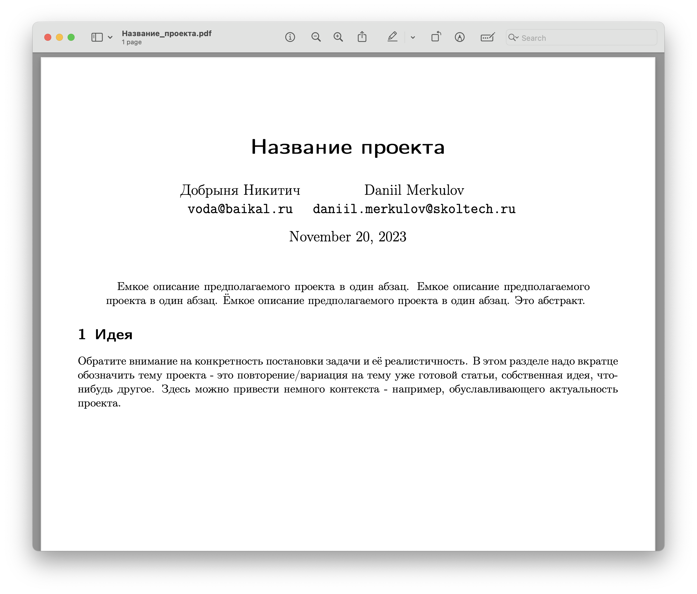
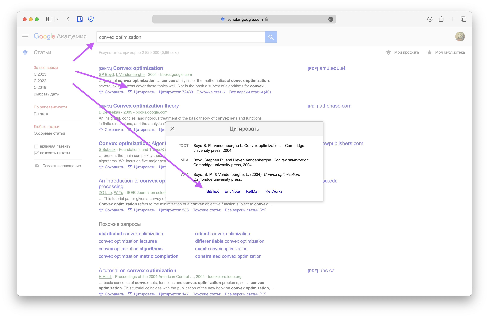

Выбор темы проекта
🗓 29 ноября. 🦄 2 балла
К этому моменту необходимо лично согласовать с преподавателем тему проекта и высокоуровневое описание процесса работы над ним. Шаблон \LaTeX для работы представлен здесь, выполнять этапы проекта надо в нём. Рекомендуется использовать VSCode с расширением LaTeX Workshop. Так же доступна версия в overleaf. Допускается выполнение проекта в Typst, если вы умеете, но требования ниже будут предъявляться точно такие же (например, корректное цитирование). В дальнейшем необходимо использовать данный шаблон, дополняя его по мере продвижения в проекте. Все материалы и ссылки по теме удобно собирать в notion, чтобы при нашем обсуждении они были под рукой.
Возможные темы
Главное требование к теме проекта - вам должно быть прикольно его делать, тема должна вас живо интересовать. Второе требование - он должен быть связан с методами оптимизации (хотя бы как-то 🙂). Тему проекта необходимо придуматьсамостоятельно.
Взять недавно опубликованную статью на конференции NeurIPS, ICML, ICLR. Детально разобраться. Воспроизвести. Попробовать на других данных/моделях/методах. Возможно, предложить посмотреть/протестировать что-нибудь новое.
Изучение методов оптимизации в непрерывном времени
Градиентный спуск можно рассматривать как дискретизацию Эйлера обыкновенного дифференциального уравнения градиентного потока. Оказывается, ускоренным методам тоже можно поставить в соответствие их непрерывные аналоги. В рамках проекта предлагается изучить где особенно полезны могут быть такие аналогии, доказать сходимость некоторых ускоренных методов в выпуклом случае, изучить сходимость методов для случая бесконечной дисперсии.
Ребятам, которые серьезно хотят погрузиться в тему методов оптимизации, доказательств оценок, теорем сходимости и других аспектов оптимизации рекомендую написать лектору (Александр Владимирович Гасников, так же можно найти его контакт в группе курса в телеграм) с вопросом, описанием своих интересов.
Обучение Reinforcement Learning агентов с помощью безградиентных методов. Ссылки для вдохновения [1], [2], [3]
Идеи проектов для курса по методам оптимизации для МГУ (Саровский филиал), который мы проводили в конце прошлого года.
Создание питон библиотеки - черного ящика для бенчмаркинга методов оптимизации с разными запусками, единым интерфейсом, построением графиков.
Поиграться с диффузионными моделями
Диффузионные модели сегодня часто используются на практике для задач генерации из распределения данных (чаще всего, изображений). В рамках проекта предлагается рассмотреть какую-нибудь простую диффузионную модель, разобраться в спейифике обучения таких моделей с точки зрения оптимизации и проделать несколько своих численных экспериментов.
Построение оптимального криптовалютного портфеля
В рамках проекта предлагается изучить стратегии портфельного инвестирования и сравнить некоторые из них в реальных условиях на рынке криптовалют с помощью программы на языке Python. Нужно будет сформулировать задачу, граничные условия и критерии для сравнения. Можно начать с портфельной теории Марковица и посмотреть, можно ли использовать недавние достижения в NLP для того, чтобы существенно это улучшить.
В качестве вдохновения можно посмотреть на лучшие проекты студентов прошлых лет:
Формат сдачи
Загрузить в свой notion в соответствующее поле pdf с названием темы и абстрактом. Убедитесь, что на этом этапе вы удалили остальные пункты из шаблона выше. Пдфка должна выглядеть как-то так:

Критерии оценивания
- 0 баллов - файл не загружен вовремя/ файл загружен в другом формате
- 1 балл - файл загружен вовремя, тема не согласована
- 2 балла - файл загружен вовремя, тема согласована
Описание решаемой задачи
🗓 29 ноября. 🦄 2 балла
На этом этапе необходимо четко сформулировать решаемую задачу. С большой вероятностью, в этом пункте нужно написать задачу оптимизации или другую решаемую математическую задачу.
Обратите внимание, что если в качестве проекта вы работаете с существующей статьей вы сначала должны написать свою задачу в рамках проекта - разобраться в чём-то, воспроизвести, повторить численные результаты, придумать другие численные эксперименты с другими моделями. А после этого необходимо так же привести в наиболее простом виде решаемую задачу из статьи. На этом этапе и далее важно не присваивать себе чужие заслуги. Постарайтесь избегать формулировок вида: мы решаем задачу (вместо этого можно написать авторы статьи решают задачу), мы хотим исследовать проблему/ предложить метод оптимизации/ проанализировать сходимость, устойчивость (вместо этого авторы статьи предлагают/ исследуют и т.д.)
Формат сдачи
Загрузить в свой notion в соответствующее поле обновленный pdf с добавленной постановкой задачи с учётом фидбека по предыдущим пунктам.
Критерии оценивания
- 0 баллов - файл не загружен вовремя/ файл загружен в другом формате
- 1 балл - файл загружен вовремя, решаемая задача сформулирована не чётко, не понятно; решаемая задача неадекватна студенческому проекту (например, для обучения модели нам нужно 1000 GPU и 355 GPU-years или в рамках проекта мы хотим придумать метод минимизации выпуклой гладкой функции с оракулом 1 порядка, который сходится квадратично по значению функции); формулировка задачи для того, чтобы её понять требует большого количества времени чтения профильной литературы по теме; формулировка задачи слишком поверхностна или наивна.
- 2 балла - файл загружен вовремя, решаемая проблема ясна и сформулирована чётко.
Литературный обзор
🗓 7 декабря. 🦄 8 баллов
На этом этапе необходимо понять научный ландшафт вокруг постановки задачи. Для этого постарайтесь, чтобы после литературного обзора были ясны ответы на следующие вопросы:
- Какие результаты были достигнуты в похожих формулировках?
- Есть ли более простые формулировки и результаты в схожей тематике?
- На какие результаты необходимо существенно опираться?
- Какие исследования обуславливают актуальность рассматриваемой задачи?
- С какими источниками необходимо ознакомиться для существенного понимания задачи?
- Есть ли в открытом доступе код для воспроизведение экспериментов для рассматриваемой задачи?
Можно использовать поиск в интернете, поиск по google scholar, поиск по perplexity.ai, поиск по ссылкам в статье. В идеале ссылаться на рецензируемые опубликованные статьи монографии. Однако, при необходимости, можно ссылаться на статьи на arxiv, блогпосты и другие источники, существенные и авторитетные для задачи. Цитирование необходимо делать с помощью bibtex. Пример откуда его брать приведён ниже:

Формат сдачи
Загрузить в свой notion в соответствующее поле обновленный pdf с добавленным литературным обзором с учётом фидбека по предыдущим пунктам.
Критерии оценивания
Баллы будут сниматься в следующих случаях (список не полный):
- Менее 7 релевантных источников по теме.
- Работа с источниками была проведена поверхностно, ссылки добавлены ради ссылок, а не ради сути.
- В результате литературного обзора совершенно не понятно, какое место занимает проект на научном ландшафте.
Project proposal
🗓 17 декабря. 🦄 8 баллов
Собираем воедино всё, что было раньше, планируем и проводим фазу прототипирования. На мой взгляд - это важнейший этап проекта. Тут нужно очень четко определить куда и как двигаться, какие тропы уже пройдены другими людьми. Обратите внимание на следующие аспекты:
- Название проекта.
- Abstract (краткое описание проекта в один абзац).
- Описание проекта (обратите внимание на конкретность постановки задачи и её реалистичность).
- Outcomes - опишите, что конкретно будет выходом Вашего проекта (код, теорема, численные эксперименты, телеграм бот, веб сайт, приложение, рассказ).
- Литературный обзор.
- Детальный план работ. Ясно, что в процессе выполнения проекта он будет меняться, однако наличие плана здесь лучше его отсутствия. Здесь вы должны написать что вы будете показывать к стадиям в следующем семестре:
- Начальная фаза проекта
- Mid-term project review
- Предзащита
- Защита
- Метрики качества. По возможности, приведите формальные и измеряемые показатели, по которым можно оценивать Ваше решение проект - это могут быть конкретные метрики качества алгоритмов, соц. опрос, логическое доказательство и т.д. Основная задача этого пункта - договориться на берегу о том, как мы сможем объективно оценить работу, проведенную в проекте. Обратите внимание, что результат проекта может быть “отрицательным” в том смысле, что мы собрались исследовать применение метода к какому-то классу задач и у нас не получилось. Это абсолютно нормально, тогда нужно будет просто описать этот процесс (мы попробовали и не вышло, но зато вот такое вот интересное наблюдали).
- Отчёт о фазе прототипирования. На этом этапе необходимо максимально широкими мазками приступить к работе над проектом. Если есть существующий код - нужно его запустить, представить результаты ваших экспериментов, показать проблемы, с которыми вы столкнулись. Попытаться предпринять первые шаги к решению проекта. Сделать что-нибудь с наскока. Совсем идеально показать какой-нибудь прототип (если это применимо к проекту).
Формат сдачи
Загрузить в свой notion в соответствующее поле обновленный pdf с добавленным литературным обзором с учётом фидбека по предыдущим пунктам.
Критерии оценивания
Баллы будут сниматься в следующих случаях (список не полный):
- Не учтены комментариипо предыдущим пунктам, если они былми.
- План работ не реалистичный, очень поверхностный. Обратите внимание, что тяжело уверенно планировать творческие задачи (доказать теорему). Здесь лучше писать чуть более специфично (например, попробовать доказать/ обобщить доказательство из другого источника).
- Нет метрик качества.
- Нет литературного обзора.
- Не написан чёткий выход (outcomes) проекта.
- Нет отчёта о фазе прототипирования.
- Изображения в proposal низкого качества плохо подписаны.
Начальная фаза
Постер в латехе с разделением на разделы, объяснением - что в каком разделе где будет. Для удобства приведен 📝 \LaTeX шаблон с 📜 примером. На этом моменте дается фидбек и ставятся задачи к следующему этапу.
Mid-project review
На этом моменте дается фидбек и ставятся задачи к защите проекта.
Предзащита
Publishing plan
На основании результатов проделанной работы мы совместно решаем каким образом необходимо опубликовать проделанный труд. Это может быть: * статья в журнале * статья на конференции * статья для летней школы * доклад на конференции * публикация на вашем сайте * статья в блоге * видео на YouTubeканале и т.д.
В частности, этот план содержит конкретные даты, выбранный журнал, куда это будет подаваться.
Публичная защита
К защите должен быть готов постер в латехе с результатами проекта. Подведение итогов. Здесь в первую очередь оценивается выступление студента. Оно должно быть понятным, структурированным, интересным.
Все дедлайны понимаются как 23:59:59 по Московскому времени.